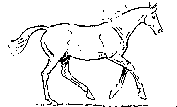

|
|
 THOROUGHBRED RACING FORECAST is a series of four Nationally televised specials featuring previews of the BIGGEST RACES in the country! The first show is the Kentucky Derby Special airing the first weekend in May. This is followed by the Preakness and Belmont Specials and finally the Breeders Cup Preview in November. These programs give the viewer an inside look at these big races, with interviews from the Track with Trainers, Jockeys, and Owners.